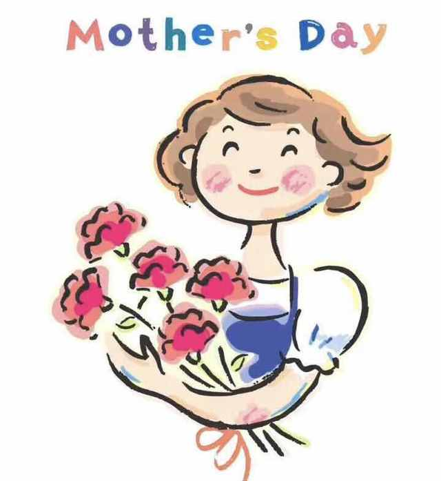

母亲，妈妈！
妈妈，母亲，是一个神圣的称呼！是她孕育了我们，给了我们生命！让我们来到这个世界上！
还记得，小时候！
还记得么，小时候，妈妈照顾我们，无微不至，我们有什么事的话最担心的是她！小时候都是妈妈来照看我们！
还记得，妈妈的手！
妈妈的手已经不光滑，但是却是最温暖，最慈爱的手！这双手给我们做衣服、做饭，小时候为我们穿衣。
或许也经常挨打！
也许我们记忆的并不是妈妈的疼爱，可能由于我们的不听话、没有完成作业而挨打！但是挨打也是妈妈疼爱我们的一种方式！
在这个感恩的节日里：
亲爱的妈妈 我想为你献上一朵花！然后说一句：妈，节日快乐！